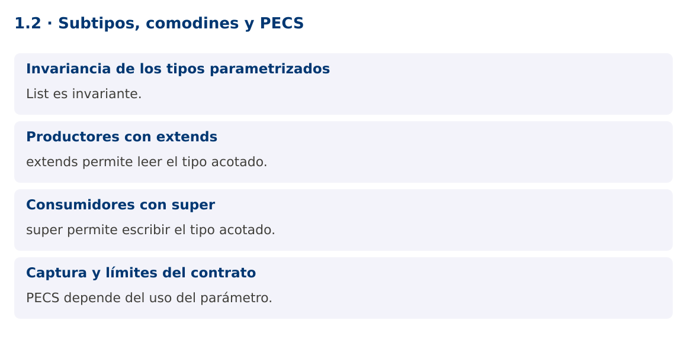

Programación Aplicada
1.2. Subtipos, comodines y PECS

Autor: Ing. Pablo Torres, Mgtr.
Unidad: 1. Programación genérica
Proyecto de trabajo: CampusMonitor
Inicio del curso · Presentación editable · Ver en el navegador
1. Conceptos y ejemplos
Contexto
Las lecturas de temperatura son Double, pero una utilidad de cálculo puede aceptar Number. La herencia entre Integer, Double y Number no se propaga automáticamente a List. El diseño de la firma determina qué se puede leer y escribir de forma segura.
Antes de empezar
Recupera el avance de 1.1c. Conserva sus comandos y evidencias. Revisa el ejemplo completo antes de implementar la PC. Las demostraciones del material se ejecutan separadas del proyecto personal.
1.1. Invariancia de los tipos parametrizados
Aunque Integer extiende Number, List
La compatibilidad se expresa con comodines. List<?> representa una lista de un tipo desconocido. Puedes recuperar elementos como Object y consultar tamaño o vaciado, pero no insertar un valor concreto con seguridad. Desconocido no significa que la lista mezcle libremente todos los tipos.
List<Integer> ocupacion = List.of(10, 12);
List<? extends Number> lectura = ocupacion;
Number primero = lectura.get(0);
1.2. Productores con extends
List<? extends Number> representa una lista de algún subtipo de Number. Se puede leer cada elemento como Number. No permite añadir un Integer o un Double porque el subtipo concreto es desconocido. La lista podría ser List
Usa extends cuando el parámetro produce valores para el algoritmo. Un sumador solo necesita leer y convertir a double. Este contrato acepta listas Integer y Double. Recuerda que una suma numérica no valida unidades y que double no sirve para todos los dominios, como importes monetarios exactos.
1.3. Consumidores con super
List<? super Integer> representa una lista de Integer o de alguno de sus supertipos. Es seguro añadir Integer. Al leer, el tipo garantizado es Object, porque una List
PECS resume Producer Extends, Consumer Super. Se aplica a parámetros de entrada según su papel en el algoritmo. En copiar, el origen produce T y el destino consume T. Si un parámetro se lee y escribe con el mismo tipo concreto, una List
static <T> void copiar(List<? extends T> origen, List<? super T> destino) {
destino.addAll(origen);
}
1.4. Captura y límites del contrato
El compilador captura el comodín como un tipo desconocido consistente. Un método auxiliar genérico puede aprovechar esa captura para operaciones como intercambiar elementos de una misma lista. La necesidad de ese auxiliar no implica que deba usarse un cast sin comprobar.
La firma tampoco garantiza mutabilidad. List.of crea una lista no modificable, por lo que usarla como destino de copiar lanza UnsupportedOperationException. Documenta las precondiciones: el destino debe aceptar inserciones y los valores deben respetar la política de nulos. Tipo, mutabilidad y reglas del dominio son dimensiones independientes.
Mapa de conceptos

2. Demostración guiada
2.1. Problema y contrato
Las lecturas de temperatura son Double, pero una utilidad de cálculo puede aceptar Number. La herencia entre Integer, Double y Number no se propaga automáticamente a List. El diseño de la firma determina qué se puede leer y escribir de forma segura.
La implementación siguiente es una demostración resuelta. La PC de la sección 3 requiere desarrollar una ampliación propia sobre CampusMonitor.
Archivo completo: ComodinesDemo.java.
package edu.ups.pap.u01;
import java.util.*;
public class ComodinesDemo {
static double sumar(List<? extends Number> valores) {
double total = 0;
for (Number n : valores) total += Objects.requireNonNull(n).doubleValue();
return total;
}
static <T> void copiar(List<? extends T> origen, List<? super T> destino) {
destino.addAll(origen);
}
public static void main(String[] args) {
List<Integer> ocupacion = List.of(10,12,8);
List<Number> acumulado = new ArrayList<>();
copiar(ocupacion, acumulado);
copiar(List.of(22.5,24.0), acumulado);
System.out.println(acumulado);
System.out.println("Total numérico: " + sumar(acumulado));
List<Object> auditoria = new ArrayList<>();
copiar(acumulado, auditoria);
System.out.println("Elementos auditados: " + auditoria.size());
}
}
2.2. Ejecución
Desde la raíz de este repositorio, con JDK 25:
java 01/1.2-subtipos-comodines/ejemplos/ComodinesDemo.java
Con el proyecto Gradle de demostraciones:
cd demostraciones
./gradlew runDemo -Pdemo=1.2
En Windows usa gradlew.bat. Ejecuta cada demostración desde una terminal nueva o vuelve a la raíz antes de cambiar de contenido.
2.3. Resultado y lectura de la ejecución
[10, 12, 8, 22.5, 24.0]
Total numérico: 76.5
Elementos auditados: 5
- Identifica los datos iniciales y las precondiciones que la demostración valida.
- Sigue las llamadas desde
mainoloopy relaciona las operaciones con los conceptos de la sección 1. - Contrasta el resultado con la salida esperada del ejemplo. Si el orden es concurrente, compara la invariante y no el orden de impresión.
- Cambia un dato del ejemplo y predice el resultado antes de ejecutarlo. Registra cualquier diferencia y su causa.
3. PC1.2 · Práctica de clase
3.1. Ampliación del proyecto
Esta actividad se resuelve en tu repositorio icc-pap-campusmonitor-apellido. Mantén la funcionalidad anterior. No reemplaces tu solución con los archivos de demostración del material.
- Generaliza el método de copia del catálogo con origen productor y destino consumidor. Usa una lista destino modificable.
- Demuestra copias Integer a Number y Number a Object. Mantén separados los promedios por unidad en CampusMonitor.
- Incluye dos contraejemplos comentados: asignación List
a List e inserción en List<? extends Number>. Explica por qué no compilan.
3.2. Comprobación y evidencia
Prueba los casos de esta sección y registra entradas, salida real y explicación. Incluye una ejecución normal y un caso de error. La evidencia debe permitir repetir el resultado desde el commit entregado.
| Caso que debes revisar | Comportamiento requerido |
|---|---|
| Origen Integer, destino Number | Copia válida |
| Destino List.of | Precondición incumplida documentada |
| Origen vacío | Destino permanece igual |
En evidencias/PC1.2.md agrega: cambio realizado, archivos principales, comandos de ejecución, tabla de pruebas y enlace al commit final. No añadas una rúbrica a esta PC.
3.3. Commits de la actividad
git status
git add src evidencias
git commit -m "feat(pc1.2): subtipos-comodines-y-pecs"
git push
git log -1 --format=%H
Ajusta las rutas de git add a los archivos que realmente creaste. Incluye también configuración o SQL si cambiaste esos archivos. El último comando muestra el hash real que debes enlazar en tu evidencia.
Lo esencial
- List es invariante.
- extends permite leer el tipo acotado.
- super permite escribir el tipo acotado.
- PECS depende del uso del parámetro.